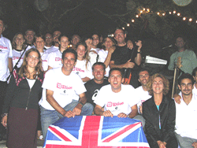
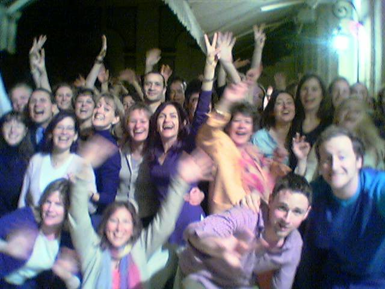
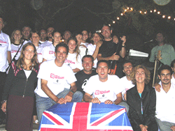
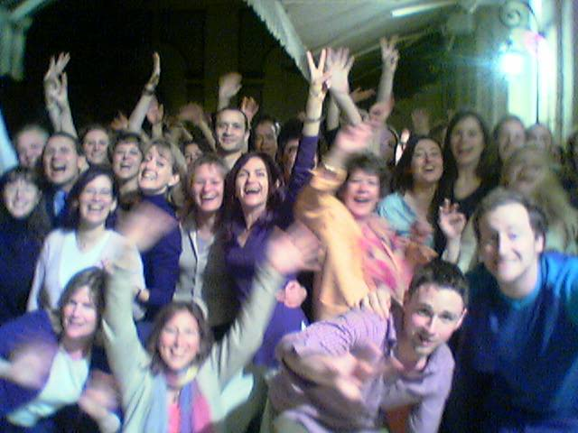

We photograph the best audiences and post them on this page... take a look and see if you were there!
Arcachon Stade Vélodrome
27 juillet 2016 première partie de Francis Cabrel
Bordeaux Place des Quinconces
Fan Zone Euro 2016, 10 juillet 2016
Quel pied ! Jouer devant 40 000 supporteurs juste avant la finale... énorme !
Arcachon, 11 mars 2016 Théâtre Olympia
Soirée 100% BEATLES Photos (c) Christian Visticot
Le Moulleau - 20 juin 2015 Fête de la Musique
Le Moulleau Village (Arcachon) s'enflamme ! Soirée super, un grand merci à tous... et pas une goute de pluie !
Arcachon, Place Thiers, 9 août 2014
Notre petite fête estivale avec les Arcachonnais !
Gujan-Mestras en Fête, 10 août 2014
Lac de la Magdalene
Soirée de folie ! Merci à tous
British Embassy Paris, June 27th 2013
Another brilliant Summer Ball, and farewell to Marina !
British Embassy Paris
Christmas Ball, 14th December 2012.
Another great party!
Lunel-Viel, 26 août 2012
Festival Un Piano Sous les Arbres
Un lieu magique pour un festival de taille humaine... chaleureuse et unique !
Dax - La Féria, 10 août 2012
Pena Alegria Forever !
Biscarosse, 26 mai 2012
Festival Bisc'en Zic. Beau, chaud, public excellent...!!!
Dax - La Féria, 14 août 2011
Pena Alegria, sur les Remparts. Encore une année sublime !
Arcachon 6 août 2010
Stade Vélodrome - Mark Brenner band en première partie du concert de Pascal Obispo
Soirée géniale... et public chaleureux !
Bordeaux - Place des Quinconces, samedi 30 mai 2009
"Le FC Girondins de Bordeaux avait organisé une soirée spéciale aux Quinconces. Les plus de 80 000 personnes présentes sur place ont assisté à un concert de Mark Brenner, en marge de la rencontre."
Montaigut, 18 octobre 2008
Happy Birthday Philippe !
Chelmsford, August 25th 2008
Mark In The Park - for The Jays Hospice Charity
Same marquee... same great atmosphere!
Fêtes de Dax 16 août 2008
La Pena Alegria, sur les Ramparts
On remets les couverts pour une soirée de folie !
Fêtes de Dax 15 août 2008
La Pena Alegria, sur les Ramparts.
Après la pluie... le feu ! La première de 2 superbes soirées.
La Jenny, 1 août 2008
Soirée "Flower Power" à La Jenny, au Porge.
Bastia, Corsica, May 12th 2008
Concert surprise dans la caserne des Pompiers de Bastia !
Surprise gig at the Bastia Fire Station! Happy Birthday Didier...
Chelmsford, England
5th April 2008 - The Jay's Gala
The best yet... here's to next year!
Bordeaux, September 16th 2007
Bordeaux Rugby Village - Rugby World Cup
La France à gagné... alors public prêt à faire la fête !
Ils étaient 10,000 sur les quais...
Bordeaux, September 14th 2007
Bordeaux Rugby Village - Rugby World Cup
Pauillac, September 8th 2007
Départ du Marathon du Médoc
Environ 10,000 personnes... le départ à duré 10 minutes !
Arcachon, Place Thiers, 27 July 2007
Mark's 40th birthday show
Magique...! Et MERCI !
Lacanau-Océan, 18 juillet 2007
Soirée 100% Beatles, Salle l'Escoure
Génial !
Fête de la Fleur
Château Smith Haut Lafitte, 21 juin 2007
... oui, c'est bien Gary Dourdan des "Experts de Las Vegas" !
Marmande - Lycée March 28th 2007
l'entente cordiale en marche !
Arcachon, December 8th 2006
L'Olympia - Soirée 100% Beatles
Beatlemania arrive à l'Olympia !
Arcachon, July 28th 2006
Place Thiers.
1200 people and a brilliant night in the summer heat.
Cazaux, 13 July 2006
Fêtes du Lac
Cadre magnifique, public au top !
Arcachon, August 10th 2005
Stade Vélodrome : supporting JOE COCKER
5,500 people... scorching weather... and just round the corner from my house!
Biscarosse, August 2nd 2005
Camping les Ecureuils
A hot summer night's dream!
Levignac, June 25th 2005
Very hot and sunny Scottish wedding!
La Teste de Buch, March 26th 2005
Beatles workshop & gig
D'abord les élèves, puis nous, puis tous ensemble !
Monte Carlo, March 23rd 2005
Salle Empire, Hôtel de Paris
Soirée privée pour la Lotto Belge
Marmande, February 17th 2005
Lycée de Marmande - Soirée 100 % Beatles
Beatlemania strikes Marmande with the Great Shakes!
Bordeaux, January 20th 2005
Cité Mondiale, Soirée Coca Cola Live Tour 2005.
They rocked!
Chelmsford, England, January 14th 2005
The Jay's benefit evening
Good company, great atmosphere and inflatable dolphins...
Arcachon, January 2nd 2005
Marché de Noel - patinoire
La cloture du Marché de Noel... mais ou est la neige ?
Arcachon, December 16th 2004
Café de la Plage
With Pascal "A Coke and a smile" Weiss
Merignac, December 3rd 2004
Pin Gallant - Soirée privée Crédit Agricole
Hure, December 12th 2004
The Twelve Bar
Hands up if you have a spare g-string!
Saint Emilion, October 2nd 2004
Château Fourney. Filming the DVD "Live at the Chateau".
Great night, great crowd, sparkling atmosphere!
Weston-Super-Mare, Saturday July 10th 2004
The 49 Club
Sabrina and Sonia, to Weston from France via London... they came a long way to see us!
Saint Pandélon, July 24th 2004
Mariage Lerat... ils savent s'amuser ces landais !
Caudéran, June 30th 2004

Tournois de Tennis AGJA.
Soirée conviviale en plein air avec les bénévoles survoltés !
Paris, July 2nd 2004
British Embassy garden party
What can I say? These parties just get better and better!
Bordeaux, June 15th 2004
The Connemara - Stephanie's birthday
Girls, girls, girls!
Bordeaux, May 27th 2004
Hélène, Cécile et Laure
Paris, June 19th 2004
Maisons Laffitte, Frogsbeef Entente Cordiale Party.
Simon and the gang doing their bit for Anglo-French relations!
Duras, July 14th 2003
Private party
Mark, George and Tom with film star Christopher Ecclestone (The Others, Gone In 60 Seconds, Doctor Who, Shallow Grave, Jude...)
Paris - Colombes, February 13th 2004
Cambridge University Rugby Team
A bunch of nutters
Albi, January 15th 2004
O'Sullivan's
Notre premier concert à Albi... et pas le dernier !
Hotel Mercure, Bordeaux, January 11th 2004
Chateaux des Chartrons
A great wedding...merci à Yann et Emmanuelle !
Bordeaux, December 20th 2003
Christmas Party at the Cambridge Arms
The usual nuttiness and lots of turkey !
Frog & Rosbif, Bordeaux, Dec 13th 2003
Mental !
British Embassy, Paris, December 12th 2003
The Ambassador's Christmas Ball
A sensational evening in sumptuous and historic surroundings.
Australian Embassy, Paris, December 10th 2003
Xmas Party à l'Ambassade d'Australie
Another unbelievable night... on stage surrounded by Aboriginal works of art!
La Réole, October 24th 2003
Soirée 100 % Beatles with The Great Shakes.
Public super... a great crowd!
Connemara, September 5th 2003
Marine's leaving party
Un grand "bon voyage" a une des plus fideles... See you in America!
Lege Cap Ferret, August 21st 2003
La Madrague, Plage du Grand Crohot
La dernière date à la Madrague de l'été, et une grande soirée !
Dax, August 16th 2003
La Pena Alegria
La deuxième soirée, aussi chaude que la première malgré la pluie.
Dax, August 15th 2003

La Pena Alegria
The first of 2 amazing nights.
La première de deux soirées inoubliables !
Anglet, June 6th 2003
Choko Ona... what does it mean?
Superbe fête du quartier avec danseurs et danseuses a-go-go.
Bayonne, December 31st 2003
Katie Daly's
New Year's Eve Party... FOU !
Bayonne, August 2nd 2003
Fêtes de Bayonne - Katy Daley's
What an amazing couple of days we had in Bayonne... soaring temperatures of over 40`C, fantastic crowds and topless girls!
Australian Embassy, Paris, May 23rd 2003
How much Fosters can 200 people drink?
The inimitable Aussie Pie Charity Night (an excuse for a serious party and drinking lots of beer), just a few yards away from the Eiffel Tower. Top dinkum!
British Embassy, Paris, May 22nd 2003

50 years of great British pop music
A great party in a fantastic venue... we played on the terrace overlooking the lawn tennis courts. Charlie Watts from the Rolling Stones was in the audience.
Montaigut, 18 octobre 2008
Happy Birthday Philippe !
Chelmsford, August 25th 2008
Mark In The Park - for The Jays Hospice Charity
Same marquee... same great atmosphere!
Fêtes de Dax 16 août 2008
La Pena Alegria, sur les Ramparts
On remets les couverts pour une soirée de folie !
Fêtes de Dax 15 août 2008
La Pena Alegria, sur les Ramparts.
Après la pluie... le feu ! La première de 2 superbes soirées.
La Jenny, 1 août 2008
Soirée "Flower Power" à La Jenny, au Porge.
Bastia, Corsica, May 12th 2008
Concert surprise dans la caserne des Pompiers de Bastia !
Surprise gig at the Bastia Fire Station! Happy Birthday Didier...
Chelmsford, England
5th April 2008 - The Jay's Gala
The best yet... here's to next year!
Bordeaux, September 16th 2007
Bordeaux Rugby Village - Rugby World Cup
La France à gagné... alors public prêt à faire la fête !
Ils étaient 10,000 sur les quais...
Bordeaux, September 14th 2007
Bordeaux Rugby Village - Rugby World Cup
Pauillac, September 8th 2007
Départ du Marathon du Médoc
Environ 10,000 personnes... le départ à duré 10 minutes !
Arcachon, Place Thiers, 27 July 2007
Mark's 40th birthday show
Magique...! Et MERCI !
Lacanau-Océan, 18 juillet 2007
Soirée 100% Beatles, Salle l'Escoure
Génial !
Fête de la Fleur
Château Smith Haut Lafitte, 21 juin 2007
... oui, c'est bien Gary Dourdan des "Experts de Las Vegas" !
Marmande - Lycée March 28th 2007
l'entente cordiale en marche !
Arcachon, December 8th 2006
L'Olympia - Soirée 100% Beatles
Beatlemania arrive à l'Olympia !
Arcachon, July 28th 2006
Place Thiers.
1200 people and a brilliant night in the summer heat.
Cazaux, 13 July 2006
Fêtes du Lac
Cadre magnifique, public au top !
Arcachon, August 10th 2005
Stade Vélodrome : supporting JOE COCKER
5,500 people... scorching weather... and just round the corner from my house!
Biscarosse, August 2nd 2005
Camping les Ecureuils
A hot summer night's dream!
Levignac, June 25th 2005
Very hot and sunny Scottish wedding!
La Teste de Buch, March 26th 2005
Beatles workshop & gig
D'abord les élèves, puis nous, puis tous ensemble !
Monte Carlo, March 23rd 2005
Salle Empire, Hôtel de Paris
Soirée privée pour la Lotto Belge
Marmande, February 17th 2005
Lycée de Marmande - Soirée 100 % Beatles
Beatlemania strikes Marmande with the Great Shakes!
Bordeaux, January 20th 2005
Cité Mondiale, Soirée Coca Cola Live Tour 2005.
They rocked!
Chelmsford, England, January 14th 2005
The Jay's benefit evening
Good company, great atmosphere and inflatable dolphins...
Arcachon, January 2nd 2005
Marché de Noel - patinoire
La cloture du Marché de Noel... mais ou est la neige ?
Arcachon, December 16th 2004
Café de la Plage
With Pascal "A Coke and a smile" Weiss
Merignac, December 3rd 2004
Pin Gallant - Soirée privée Crédit Agricole
Hure, December 12th 2004
The Twelve Bar
Hands up if you have a spare g-string!
Saint Emilion, October 2nd 2004
Château Fourney. Filming the DVD "Live at the Chateau".
Great night, great crowd, sparkling atmosphere!
Weston-Super-Mare, Saturday July 10th 2004
The 49 Club
Sabrina and Sonia, to Weston from France via London... they came a long way to see us!
Saint Pandélon, July 24th 2004
Mariage Lerat... ils savent s'amuser ces landais !
Caudéran, June 30th 2004

Tournois de Tennis AGJA.
Soirée conviviale en plein air avec les bénévoles survoltés !
Paris, July 2nd 2004
British Embassy garden party
What can I say? These parties just get better and better!
Bordeaux, June 15th 2004
The Connemara - Stephanie's birthday
Girls, girls, girls!
Bordeaux, May 27th 2004
Hélène, Cécile et Laure
Paris, June 19th 2004
Maisons Laffitte, Frogsbeef Entente Cordiale Party.
Simon and the gang doing their bit for Anglo-French relations!
Duras, July 14th 2003
Private party
Mark, George and Tom with film star Christopher Ecclestone (The Others, Gone In 60 Seconds, Doctor Who, Shallow Grave, Jude...)
Paris - Colombes, February 13th 2004
Cambridge University Rugby Team
A bunch of nutters
Albi, January 15th 2004
O'Sullivan's
Notre premier concert à Albi... et pas le dernier !
Hotel Mercure, Bordeaux, January 11th 2004
Chateaux des Chartrons
A great wedding...merci à Yann et Emmanuelle !
Bordeaux, December 20th 2003
Christmas Party at the Cambridge Arms
The usual nuttiness and lots of turkey !
Frog & Rosbif, Bordeaux, Dec 13th 2003
Mental !
British Embassy, Paris, December 12th 2003
The Ambassador's Christmas Ball
A sensational evening in sumptuous and historic surroundings.
Australian Embassy, Paris, December 10th 2003
Xmas Party à l'Ambassade d'Australie
Another unbelievable night... on stage surrounded by Aboriginal works of art!
La Réole, October 24th 2003
Soirée 100 % Beatles with The Great Shakes.
Public super... a great crowd!
Connemara, September 5th 2003
Marine's leaving party
Un grand "bon voyage" a une des plus fideles... See you in America!
Lege Cap Ferret, August 21st 2003
La Madrague, Plage du Grand Crohot
La dernière date à la Madrague de l'été, et une grande soirée !
Dax, August 16th 2003
La Pena Alegria
La deuxième soirée, aussi chaude que la première malgré la pluie.
Dax, August 15th 2003
La Pena Alegria
The first of 2 amazing nights. La première de deux soirées inoubliables !
Anglet, June 6th 2003
Choko Ona... what does it mean?
Superbe fête du quartier avec danseurs et danseuses a-go-go.
Bayonne, December 31st 2003
Katie Daly's
New Year's Eve Party... FOU !
Bayonne, August 2nd 2003
Fêtes de Bayonne - Katy Daley's
What an amazing couple of days we had in Bayonne... soaring temperatures of over 40`C, fantastic crowds and topless girls!
Australian Embassy, Paris, May 23rd 2003
How much Fosters can 200 people drink?
The inimitable Aussie Pie Charity Night (an excuse for a serious party and drinking lots of beer), just a few yards away from the Eiffel Tower. Top dinkum!
British Embassy, Paris, May 22nd 2003
